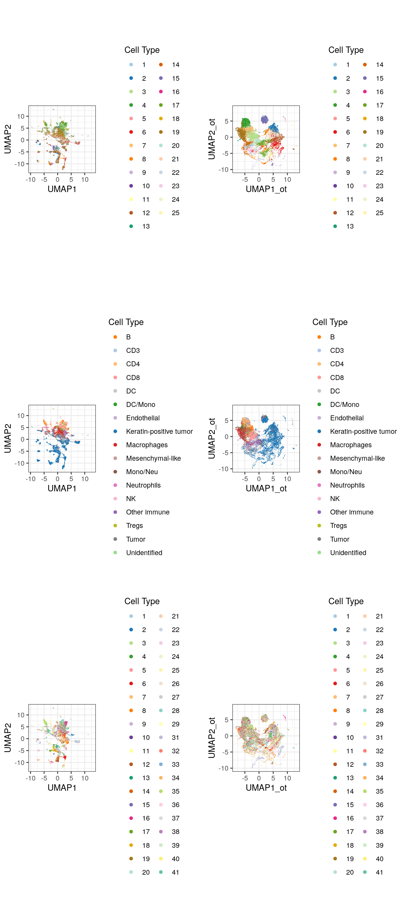
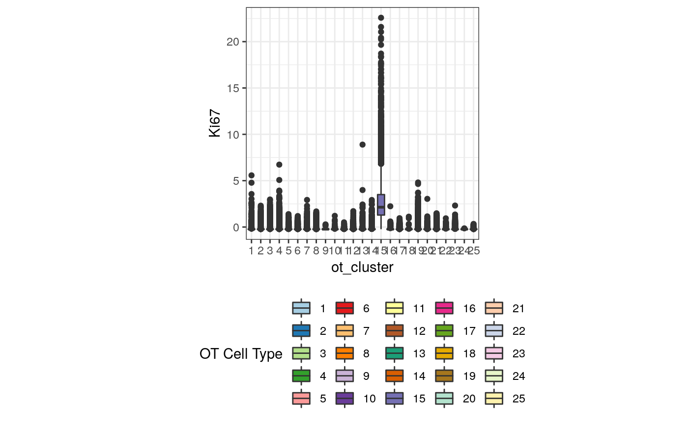
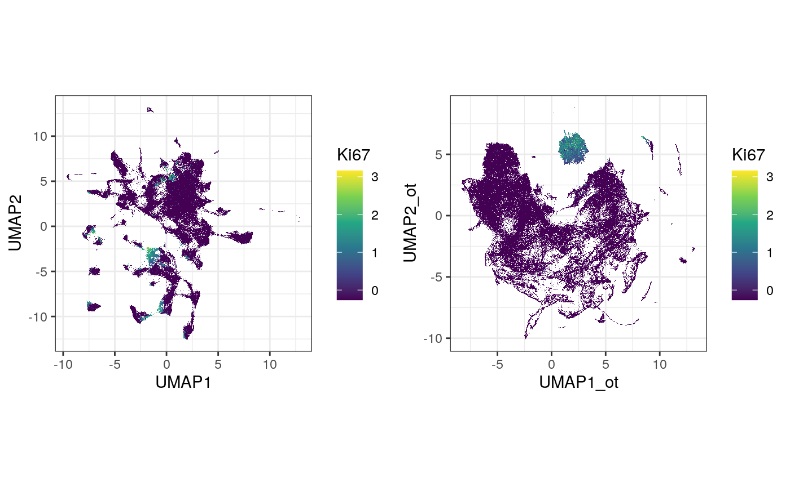
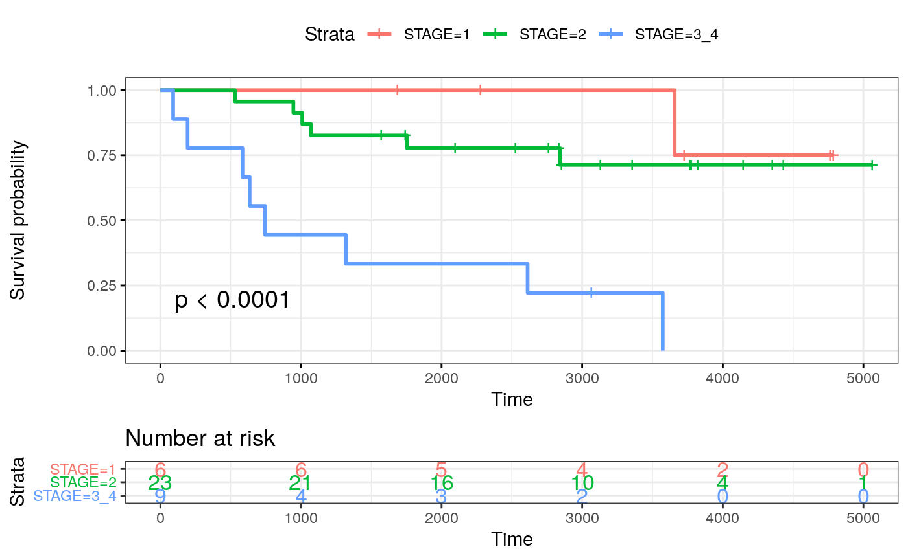
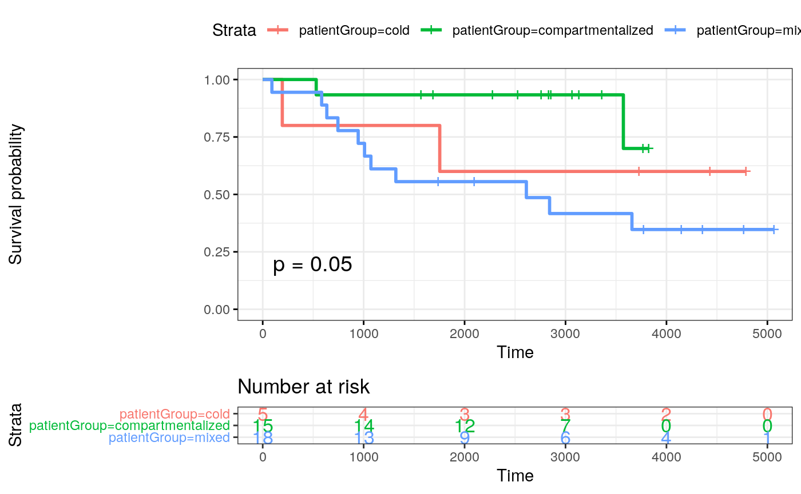
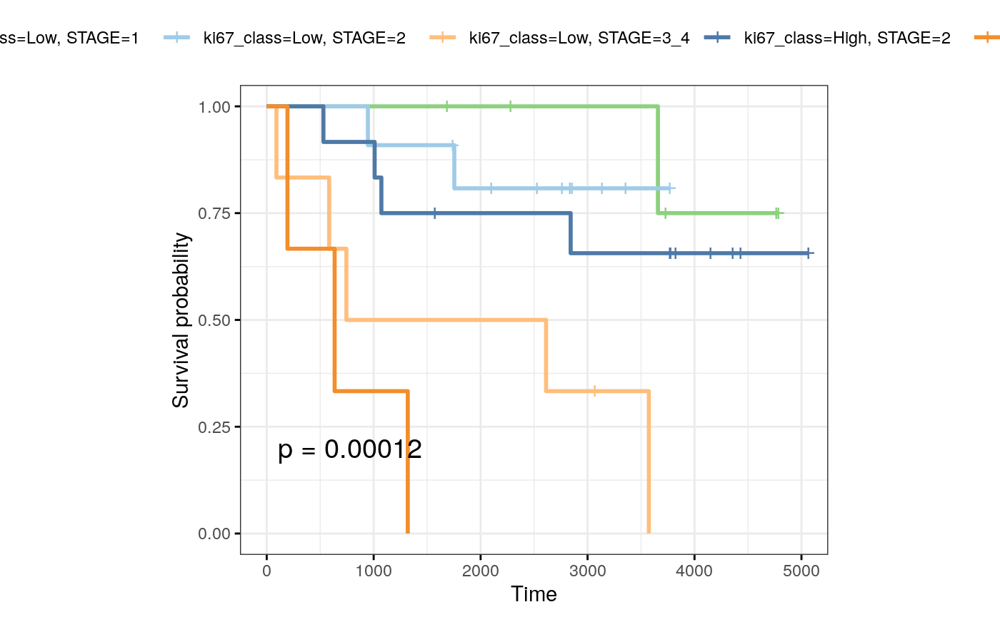

library(raster) library(SingleCellExperiment) library(scater) library(plyr) library(ggplot2) library(pheatmap) library(ggthemes) library(RColorBrewer) library(spatstat) library(gridExtra) library(ggpubr) library(spatstat) source("../R/image_analysis_functions.R")
mibi.sce <- readRDS("data/mibi.sce_withDR.rds") colnames(mibi.sce) <- paste(mibi.sce$SampleID, mibi.sce$cellLabelInImage, sep = "_") mibi.sce$cellTypes <- ifelse(as.character(mibi.sce$immune_group) != "not immune", as.character(mibi.sce$immune_group), as.character(mibi.sce$tumor_group)) mibi.sce$cellTypes_group <- ifelse(as.character(mibi.sce$immune_group) != "not immune", "Micro-environment", "Tumour") selected_chanel_mibi <- rownames(mibi.sce)[rowData(mibi.sce)$is_protein == 1]
# color for mibi cell types cellTypes_group_mibi_color <- tableau_color_pal("Tableau 10")(length(unique(mibi.sce$cellTypes_group))) cellTypes_group_mibi_color <- c(cellTypes_group_mibi_color, "black") names(cellTypes_group_mibi_color) <- c(unique(mibi.sce$cellTypes_group), "Background") cellTypes_mibi_color <- tableau_color_pal("Classic 20")(length(unique(mibi.sce$cellTypes))) cellTypes_mibi_color <- c(cellTypes_mibi_color, "black") names(cellTypes_mibi_color) <- c(unique(mibi.sce$cellTypes), "Background")
tiff_name_list <- list.files("../../sc-targeted-proteomics/data/TNBC_shareCellData/", pattern = ".tiff") tiff_name_list <- tiff_name_list[-24] common_protein <- c("CD3", "CD68", "HLA-DR", "CD45") ot_rbind_list <- list() for (s in 1:length(tiff_name_list)) { str_name <- paste("../../sc-targeted-proteomics/data/TNBC_shareCellData/", tiff_name_list[s], sep = "") sample_id <- as.numeric(gsub("p", "", gsub("_labeledcellData.tiff", "", tiff_name_list[s]))) print(sample_id) p_sce <- mibi.sce[, mibi.sce$SampleID == sample_id] p_sce <- p_sce[rowData(p_sce)$is_protein == 1, ] exprsMat <- assay(p_sce, "mibi_exprs") # Optimal transport results epith_ot <- read.csv(paste0("../../sc-targeted-proteomics/OT/data/mibi_exprs_ot_pred_mat_epith/pred_res_mat_all_patient_", sample_id, ".csv"), row.names = 1) epith_ot <- as.matrix(epith_ot) tcells_ot <- read.csv(paste0("../../sc-targeted-proteomics/OT/data/mibi_exprs_ot_pred_mat_tcells/pred_res_mat_all_patient_", sample_id, ".csv"), row.names = 1) tcells_ot <- as.matrix(tcells_ot) rownames(epith_ot)[rownames(epith_ot) == "HLADR"] <- "HLA-DR" rownames(tcells_ot)[rownames(tcells_ot) == "HLADR"] <- "HLA-DR" ot_rbind <- rbind((epith_ot), (tcells_ot[!rownames(tcells_ot) %in% common_protein,])) ot_rbind <- t(apply(ot_rbind, 1, scale)) colnames(ot_rbind) <- colnames(exprsMat) ot_rbind_list[[s]] <- ot_rbind } ot_rbind_list <- do.call(cbind, ot_rbind_list) saveRDS(ot_rbind_list, "data/mibi_ot_all.rds")
load("data/ot_rbind_list.rda") mibi.sce_filtered <- mibi.sce[, colnames(ot_rbind_list)] altExp(mibi.sce_filtered, "OT") <- SummarizedExperiment(list(exprs = ot_rbind_list)) mibi.sce_filtered <- scater::runPCA(mibi.sce_filtered, altexp = "OT", ncomponents = 20, exprs_values = "exprs", name = "OT_PCA") set.seed(2020) mibi.sce_filtered <- scater::runUMAP(mibi.sce_filtered, altexp = "OT", exprs_values = "exprs", pca = 20, scale = FALSE, n_neighbors = 20, name = "OT_UMAP") # g <- scran::buildKNNGraph(mibi.sce_filtered, k = 50, use.dimred = "OT_PCA") # clust <- igraph::cluster_louvain(g)$membership # table(clust) g <- scran::buildKNNGraph(mibi.sce_filtered, k = 50, use.dimred = "OT_PCA") clust <- igraph::cluster_louvain(g)$membership table(clust)
## clust
## 1 2 3 4 5 6 7 8 9 10 11 12 13
## 4110 12520 16729 18822 1002 11641 11937 8758 1874 1541 3846 11122 1967
## 14 15 16 17 18 19 20 21 22 23 24 25
## 9738 13221 1327 13087 422 22752 6523 8367 3470 8181 722 3999mibi.sce_filtered$ot_cluster <- as.factor(clust)
df_toPlot <- data.frame(colData(mibi.sce_filtered)) cellTypes_color_cluster <- c(RColorBrewer::brewer.pal(12, "Paired"), RColorBrewer::brewer.pal(7, "Dark2"), RColorBrewer::brewer.pal(8, "Pastel2"), RColorBrewer::brewer.pal(12, "Set3"), RColorBrewer::brewer.pal(8, "Set2")) umap_mibi <- reducedDim(mibi.sce_filtered, "OT_UMAP") df_toPlot$UMAP1_ot <- umap_mibi[, 1] df_toPlot$UMAP2_ot <- umap_mibi[, 2] umap <- reducedDim(mibi.sce_filtered, "UMAP") df_toPlot$UMAP1 <- umap[, 1] df_toPlot$UMAP2 <- umap[, 2] library(scattermore) g1 <- ggplot(df_toPlot, aes(x = UMAP1, y = UMAP2, color = ot_cluster)) + geom_scattermore() + theme_bw() + theme(aspect.ratio = 1) + scale_color_manual(values = cellTypes_color_cluster) + labs(color = "Cell Type") g2 <- ggplot(df_toPlot, aes(x = UMAP1, y = UMAP2, color = cellTypes)) + geom_scattermore() + theme_bw() + theme(aspect.ratio = 1) + scale_color_manual(values = cellTypes_mibi_color) + labs(color = "Cell Type") g3 <- ggplot(df_toPlot, aes(x = UMAP1, y = UMAP2, color = factor(SampleID))) + geom_scattermore() + theme_bw() + theme(aspect.ratio = 1) + scale_color_manual(values = cellTypes_color_cluster) + labs(color = "Cell Type") g4 <- ggplot(df_toPlot, aes(x = UMAP1_ot, y = UMAP2_ot, color = ot_cluster)) + geom_scattermore() + theme_bw() + theme(aspect.ratio = 1) + scale_color_manual(values = cellTypes_color_cluster) + labs(color = "Cell Type") g5 <- ggplot(df_toPlot, aes(x = UMAP1_ot, y = UMAP2_ot, color = cellTypes)) + geom_scattermore() + theme_bw() + theme(aspect.ratio = 1) + scale_color_manual(values = cellTypes_mibi_color) + labs(color = "Cell Type") g6 <- ggplot(df_toPlot, aes(x = UMAP1_ot, y = UMAP2_ot, color = factor(SampleID))) + geom_scattermore() + theme_bw() + theme(aspect.ratio = 1) + scale_color_manual(values = cellTypes_color_cluster) + labs(color = "Cell Type") ggarrange(g1, g4, g2, g5, g3, g6, ncol = 2, nrow = 3, align = "hv")

exprsMat <- assay(mibi.sce_filtered, "mibi_exprs") ggplot(df_toPlot, aes(x = ot_cluster, y = exprsMat["Ki67", ], fill = ot_cluster)) + geom_boxplot() + theme_bw() + theme(aspect.ratio = 1, legend.position = "bottom") + scale_fill_manual(values = cellTypes_color_cluster) + labs(fill = "OT Cell Type") + ylab("Ki67")

g2 <- ggplot(df_toPlot, aes(x = UMAP1_ot, y = UMAP2_ot, color = log(exprsMat["Ki67", ] + 1))) + geom_scattermore() + theme_bw() + theme(aspect.ratio = 1) + scale_color_viridis_c() + labs(color = "Ki67") g1 <- ggplot(df_toPlot, aes(x = UMAP1, y = UMAP2, color = log(exprsMat["Ki67", ] + 1))) + geom_scattermore() + theme_bw() + theme(aspect.ratio = 1) + scale_color_viridis_c() + labs(color = "Ki67") ggarrange(g1, g2, ncol = 2, nrow = 1, align = "hv")

cold <- c(24, 26, 15, 22, 19, 25) mixed <- c(13, 39, 29, 17, 23, 1, 33, 12, 27, 8, 2, 38, 20, 7, 14, 11, 21, 31, 18) compart <- c(35, 28, 16, 37, 40, 4, 41, 36, 3, 5, 34, 32, 6, 9, 10) mibi.sce_filtered$patientGroup <- NA mibi.sce_filtered$patientGroup[mibi.sce_filtered$SampleID %in% mixed] <- "mixed" mibi.sce_filtered$patientGroup[mibi.sce_filtered$SampleID %in% compart] <- "compartmentalized" mibi.sce_filtered$patientGroup[mibi.sce_filtered$SampleID %in% cold] <- "cold" meta_patients <- unique(data.frame(colData(mibi.sce_filtered)[, c("SampleID", "patientGroup", "Survival_days_capped_2016.1.1", "Censored", "GRADE", "STAGE", "AGE_AT_DX", "TIL_score")])) meta_patients$STAGE <- substring(as.character(meta_patients$STAGE), 1, 1) meta_patients$STAGE[meta_patients$STAGE %in% c(3, 4)] <- c("3_4") meta_patients$Censoring <- 1 - meta_patients$Censored meta_patients <- meta_patients[!is.na(meta_patients$Survival_days_capped_2016.1.1), ] dim(meta_patients)
## [1] 38 9## [1] 38 9fit_stage <- survfit( Surv(SurvivalDays, Censoring) ~ STAGE, data = meta_patients) ggsurvplot(fit_stage, data = meta_patients, # conf.int = TRUE, risk.table = TRUE, risk.table.col="strata", ggtheme = theme_bw(), pval = TRUE)

fit_patientGroup <- survfit( Surv(SurvivalDays, Censoring) ~ patientGroup, data = meta_patients) ggsurvplot(fit_patientGroup, data = meta_patients, # conf.int = TRUE, risk.table = TRUE, risk.table.col = "strata", ggtheme = theme_bw(), pval = TRUE)

prop_ot <- table(mibi.sce_filtered$ot_cluster, mibi.sce_filtered$SampleID) rownames(prop_ot) <- paste("ot_cluster_", rownames(prop_ot), sep = "") prop_ot <- apply(prop_ot, 2, function(x) x/sum(x)) meta_patients$ki67_class <- ifelse(prop_ot[15, ][as.character(meta_patients$SampleID)] > 0.06, "High", "Low") meta_patients$ki67_class <- factor(meta_patients$ki67_class, levels = c("Low", "High")) table(meta_patients$ki67_class)
##
## Low High
## 23 15fit_ki67 <- survfit( Surv(SurvivalDays, Censoring) ~ ki67_class + STAGE, data = meta_patients ) ggsurvplot(fit_ki67, data = meta_patients, ggtheme = theme_bw() + theme(aspect.ratio = 0.8), palette = tableau_color_pal("Tableau 20")(6)[c(6, 2, 4, 1, 3, 5)], pval = TRUE)

## R version 4.0.2 (2020-06-22)
## Platform: x86_64-pc-linux-gnu (64-bit)
## Running under: Ubuntu 20.04 LTS
##
## Matrix products: default
## BLAS/LAPACK: /usr/lib/x86_64-linux-gnu/openblas-openmp/libopenblasp-r0.3.8.so
##
## locale:
## [1] LC_CTYPE=en_US.UTF-8 LC_NUMERIC=C
## [3] LC_TIME=en_US.UTF-8 LC_COLLATE=en_US.UTF-8
## [5] LC_MONETARY=en_US.UTF-8 LC_MESSAGES=C
## [7] LC_PAPER=en_US.UTF-8 LC_NAME=C
## [9] LC_ADDRESS=C LC_TELEPHONE=C
## [11] LC_MEASUREMENT=en_US.UTF-8 LC_IDENTIFICATION=C
##
## attached base packages:
## [1] parallel stats4 stats graphics grDevices utils datasets
## [8] methods base
##
## other attached packages:
## [1] survminer_0.4.8 survival_3.2-3
## [3] scattermore_0.6 ggpubr_0.4.0
## [5] gridExtra_2.3 spatstat_1.64-1
## [7] rpart_4.1-15 nlme_3.1-148
## [9] spatstat.data_1.4-3 RColorBrewer_1.1-2
## [11] ggthemes_4.2.0 pheatmap_1.0.12
## [13] plyr_1.8.6 scater_1.17.4
## [15] ggplot2_3.3.2 SingleCellExperiment_1.11.6
## [17] SummarizedExperiment_1.19.6 DelayedArray_0.15.7
## [19] matrixStats_0.56.0 Matrix_1.2-18
## [21] Biobase_2.49.0 GenomicRanges_1.41.5
## [23] GenomeInfoDb_1.25.8 IRanges_2.23.10
## [25] S4Vectors_0.27.12 BiocGenerics_0.35.4
## [27] raster_3.3-13 sp_1.4-2
##
## loaded via a namespace (and not attached):
## [1] ggbeeswarm_0.6.0 colorspace_1.4-1
## [3] ggsignif_0.6.0 deldir_0.1-28
## [5] ellipsis_0.3.1 rio_0.5.16
## [7] rprojroot_1.3-2 scuttle_0.99.11
## [9] bluster_0.99.1 XVector_0.29.3
## [11] BiocNeighbors_1.7.0 fs_1.5.0
## [13] farver_2.0.3 RSpectra_0.16-0
## [15] codetools_0.2-16 splines_4.0.2
## [17] knitr_1.29 polyclip_1.10-0
## [19] km.ci_0.5-2 broom_0.7.0
## [21] uwot_0.1.8 compiler_4.0.2
## [23] dqrng_0.2.1 backports_1.1.8
## [25] assertthat_0.2.1 limma_3.45.9
## [27] BiocSingular_1.5.0 htmltools_0.5.0
## [29] tools_4.0.2 igraph_1.2.5
## [31] rsvd_1.0.3 gtable_0.3.0
## [33] glue_1.4.1 GenomeInfoDbData_1.2.3
## [35] dplyr_1.0.1 Rcpp_1.0.5
## [37] carData_3.0-4 cellranger_1.1.0
## [39] pkgdown_1.5.1 vctrs_0.3.2
## [41] DelayedMatrixStats_1.11.1 xfun_0.16
## [43] stringr_1.4.0 openxlsx_4.1.5
## [45] lifecycle_0.2.0 irlba_2.3.3
## [47] statmod_1.4.34 rstatix_0.6.0
## [49] goftest_1.2-2 edgeR_3.31.4
## [51] zoo_1.8-8 zlibbioc_1.35.0
## [53] MASS_7.3-51.6 scales_1.1.1
## [55] hms_0.5.3 spatstat.utils_1.17-0
## [57] yaml_2.2.1 curl_4.3
## [59] memoise_1.1.0 KMsurv_0.1-5
## [61] stringi_1.4.6 desc_1.2.0
## [63] scran_1.17.14 zip_2.0.4
## [65] BiocParallel_1.23.2 rlang_0.4.7
## [67] pkgconfig_2.0.3 bitops_1.0-6
## [69] evaluate_0.14 lattice_0.20-41
## [71] purrr_0.3.4 tensor_1.5
## [73] labeling_0.3 cowplot_1.0.0
## [75] tidyselect_1.1.0 RcppAnnoy_0.0.16
## [77] magrittr_1.5 R6_2.4.1
## [79] generics_0.0.2 pillar_1.4.6
## [81] haven_2.3.1 foreign_0.8-80
## [83] withr_2.2.0 mgcv_1.8-31
## [85] abind_1.4-5 RCurl_1.98-1.2
## [87] tibble_3.0.3 crayon_1.3.4
## [89] car_3.0-8 survMisc_0.5.5
## [91] rmarkdown_2.3 viridis_0.5.1
## [93] locfit_1.5-9.4 grid_4.0.2
## [95] readxl_1.3.1 data.table_1.13.0
## [97] forcats_0.5.0 digest_0.6.25
## [99] xtable_1.8-4 tidyr_1.1.1
## [101] munsell_0.5.0 beeswarm_0.2.3
## [103] viridisLite_0.3.0 vipor_0.4.5